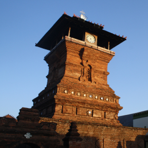
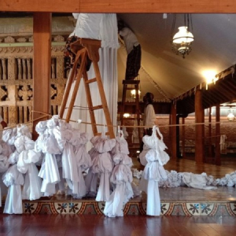
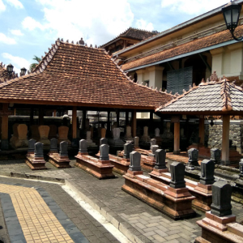
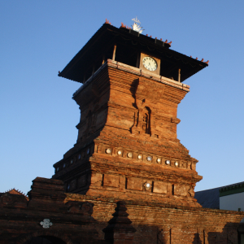
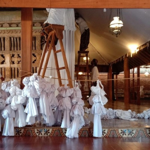
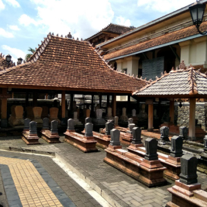

Informasi
Biografi Sunan Kudus
Sunan Kudus, juga dikenal sebagai Ja'far Shadiq, merupakan tokoh penyebar agama Islam di Pulau Jawa, terutama di daerah Kudus, Jawa Tengah. Ia adalah putra dari Raden Utsman Haji alias Sunan Ngudung dan Syarifah Dewi Rahil, putri Sunan Bonang. Ayah Sunan Kudus, Raden Utsman Haji, pernah memimpin pasukan Majapahit dan gugur dalam pertempuran melawan Adipati Terung dari Majapahit. Sunan Kudus kemudian menggantikan posisi ayahnya sebagai senopati Demak. Ibunya adalah putri Sunan Bonang, dan Sunan Kudus lahir pada 9 September 1400 M. Meskipun terdapat variasi versi mengenai asal usulnya, versi yang paling rasional menyebutkan bahwa Sunan Kudus adalah cucu dari Sunan Bonang, dan silsilahnya mengikuti keturunan langsung dari Husain bin Ali, cucu Nabi Muhammad SAW. Meskipun ada versi lain yang menyebutkan asal Persia atau Jawa, versi pertama dianggap lebih konsisten dengan fakta-fakta sejarah.
Metode Berdakwah Sunan Kudus
1. Strategi dakwah melalui pendekatan massa.
2. Melakukan pendekatan berdasarkan kepercayaan masyarakat setempat.
3. Tidak melakukan atau menggunakan jalan kekerasan.
4. Mengikuti dari belakang terhadap kelakuan dan adat rakyat tetapi diusahakan untuk
mempengaruhinya dan memasukan nilai ajaran Islam.
5. Menghindari konfrontasi secara langsung. Dengan prinsip mengambil ikan tanpa membuat keruh
airnya.
Pendekatan Kultural Sunan Kudus
1. Sunan Kudus dikenal menjadi salah satu pendakwah ulung di Tanah Jawa yang mampu menyebarkan
agama Islam dengan cara-cara fleksibel dengan mengambil hati masyarakat non-islam dengan
melakukan pendekatan kebudayaan. Sehingga agama Islam mampu diterima dengan baik oleh masyarakat
setempat tanpa melakukan tindakan kekerasan.
2. Larangan menyembelih sapi, hal ini Sunan Kudus lakukan sebagai bentuk menghargai apa yang
diyakini oleh umat Hindu yang percaya bahwa sapi merupakan hewan suci sehingga dilarang untuk
disembelih. Selain itu Sunan Kudus juga membuat menara layaknya candi. Namun, menara tersebut
tidak dijadikan sebagai tempat pemakaman raja atau menyembah roh leluhur melain tempat
mengumandangkan adzan.
3. Membuat padasan atau tempat wudhu dengan pancuran berjumlah delapan, hal ini Sunan Kudus
lakukan sebagai bentuk upaya melakukan pendekatan terhadap umat Buddha dimana jumlah pancuran
tersebut bermakna jalan berlipat delapan atau Sanghika Marga. Selain itu, Sunan Kudus juga
memberikan arca kepala kebo gumerang di atas pancuran tersebut.
4. Menyelenggarakan selamatan mitoni, Sunan Kudus tidak melarang acara selamatan atau mitoni
yang dilakukan oleh masyarakat setempat. Namun, Sunan Kudus melakukan perubahan dan memasukan
nilai-nilai Islam dalam setiap rangkaian acaranya. Misalnya mengubah permohonan doa kepada dewa
menjadi kepada Allah, berharap anak tampan seperti Arjuna atau cantik seperti Dewi Ratih dirubah
menjadi tampan seperti Nabi Yusuf dan cantik seperti Maria ibu Nabi Isa. Kemudian menjadi acara
tersebut sebagai momen bersedekah dengan berbagi makanan.